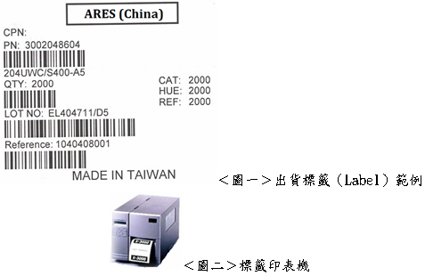
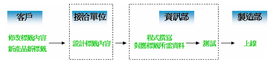
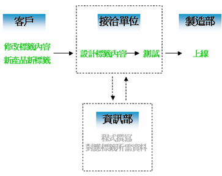
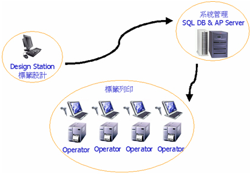
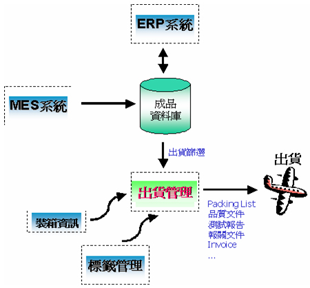

2008/01
工廠的最後一站：出貨標籤管理(SLM)之探討
文-林信宇
好不容易客戶下訂單生產的成品，經過工廠裡多道複雜的製程及加工後，終於生產完成了，經過最後的QC檢查，終於來到工廠的最後一站：包裝站（Packing）。
這時大部份的工廠人員都會面臨到幾個問題：要怎麼裝箱是最合理經濟的？因應不同客戶及產品的需求，內箱及外箱上該貼什麼樣的標籤（Label）才對？標籤的大小、格式與內容，是否是出貨的客戶接受的？…… 
一般而言在工廠中的標籤作業程序大致上如下圖： 
客戶提出需求之後，由接洽單位以標籤排版軟體進行標籤設計（接洽單位可能是生管、品管、或是資訊部門等），設計完成之後再由資訊部門人員撰寫程式，由資料庫中取出資料對應標籤中欄位所需要的資料，程式撰寫完成經測試後上線讓製造部門使用。
這種做法在標籤的數量越多，變化越快的時候，資訊部門的業務量會急遽增多，管理的困難度也會增加，同時在測試時若發現問題，也必須釐清是標籤設計有問題，還是程式撰寫有問題，增加程序上的困擾。
針對這種現象，資通電腦ciMes產品裡的一個獨立模組：出貨標籤管理系統（SLM, Shipping Label Management）可以利用標籤排版軟體之特性，以彈性及最少程式設計為主要原則，規劃出以下標籤設計程序：
客戶提出需求之後，由接洽單位以標籤排版軟體進行標籤設計（接洽單位可能是生管、品管、或是資訊部門等），排版時所需要之欄位參數，由資訊部門事先定義並設計完成，因此排版之後便可以立即進行測試，完成後再上線。
一般而言在架構初期，所定義之參數已足夠大部分標籤使用，若標籤有需要新的參數不在定義之中，則再請資訊部門撰寫程式定義新的參數。 
藉由此種新的架構方式，可以讓資訊部門在參數穩定之後儘量避免撰寫程式，同時容易的管理標籤檔案及系統。
由上面所述之解決方案，在標籤條碼管理系統中，依據在架構中的角色，共可以區分為三大塊功能：
(a)系統管理 - Administrator
(b)標籤設計 – Label Designer
(c)標籤列印 – Operator Print 
另外，標籤系統為整個工廠出貨流程的重要一環，因此一般而言會與出貨系統作整合，整個出貨系統之架構如下圖： 
作業員透過出貨管理系統，由成品資料庫中篩選出貨資料，並由裝箱資訊系統取得裝箱資訊，再透過標籤管理系統印出標籤，然後列印出貨所需文件，即可完成整個出貨作業。藉由整個完整的系統控管，可以加快出貨的速度，避免人為錯誤，貼錯標籤或缺少文件等狀況，進一步降低客訴的次數，提昇客戶服務品質。 資通電腦自行研發之MES旗艦級產品ciMes中，提供了完整的出貨標籤管理（SLM）功能模組，可以結合企業ERP系統中的訂單與出貨等模組、MES系統中的生產歷史記錄、甚至產生出貨報關的相關資料，以連結到海關的電子關務系統。資通的SLM系統可以結合ciMes系統做到無縫整合，更可以獨立運作，並和其他系統整合，以提供製造企業完整的標籤列印與出貨整體解決方案。
註: 資通、資通電腦皆為資通公司之註冊商標。其他名稱及註冊商標分別為各相關公司所有。